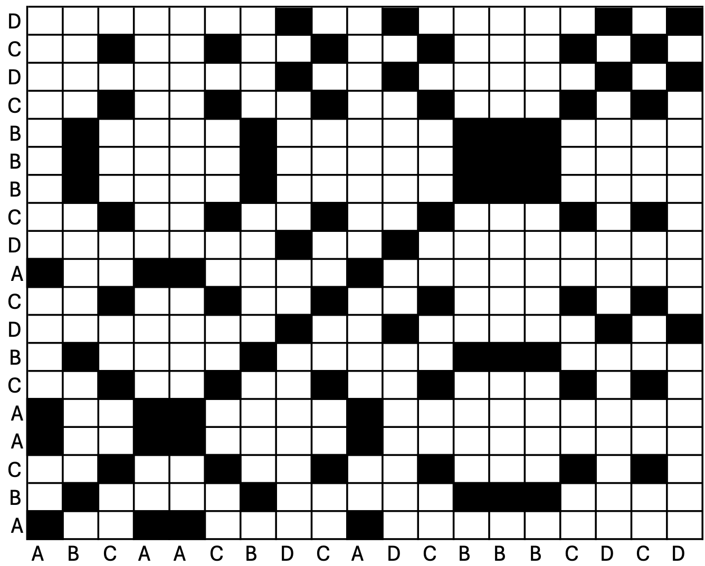
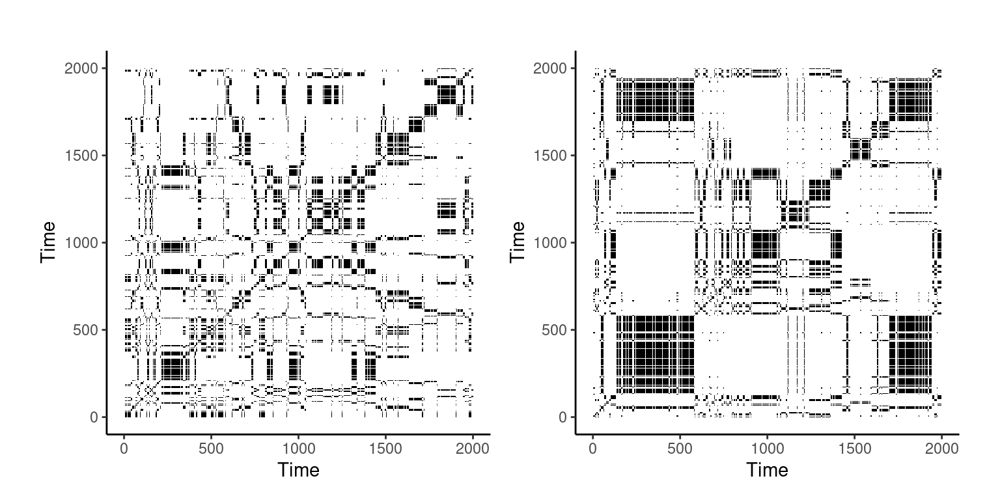
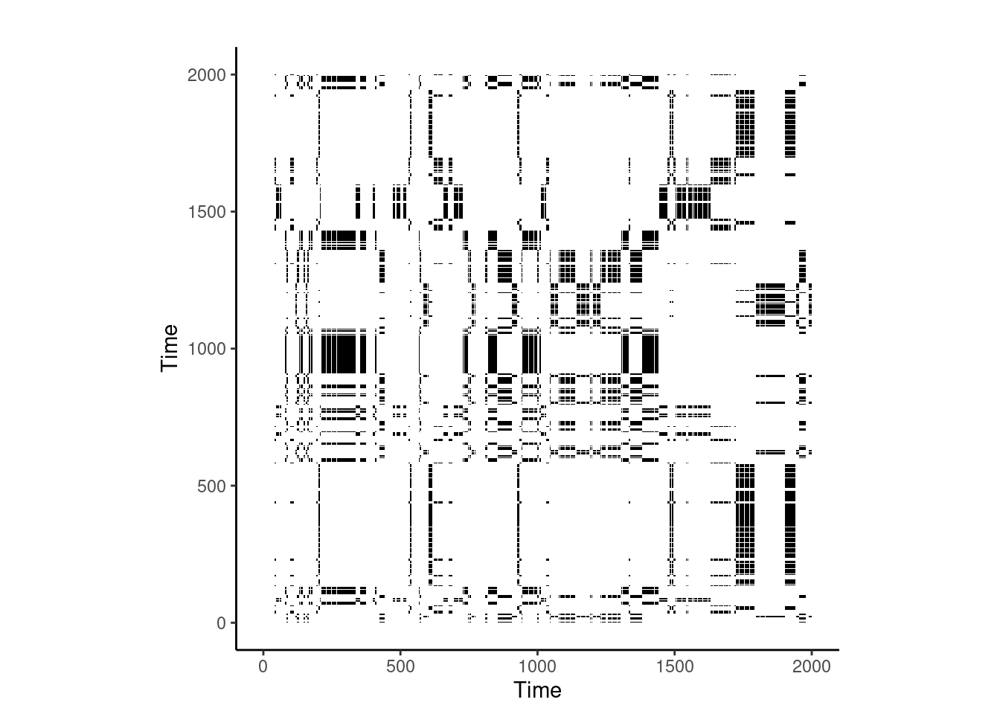
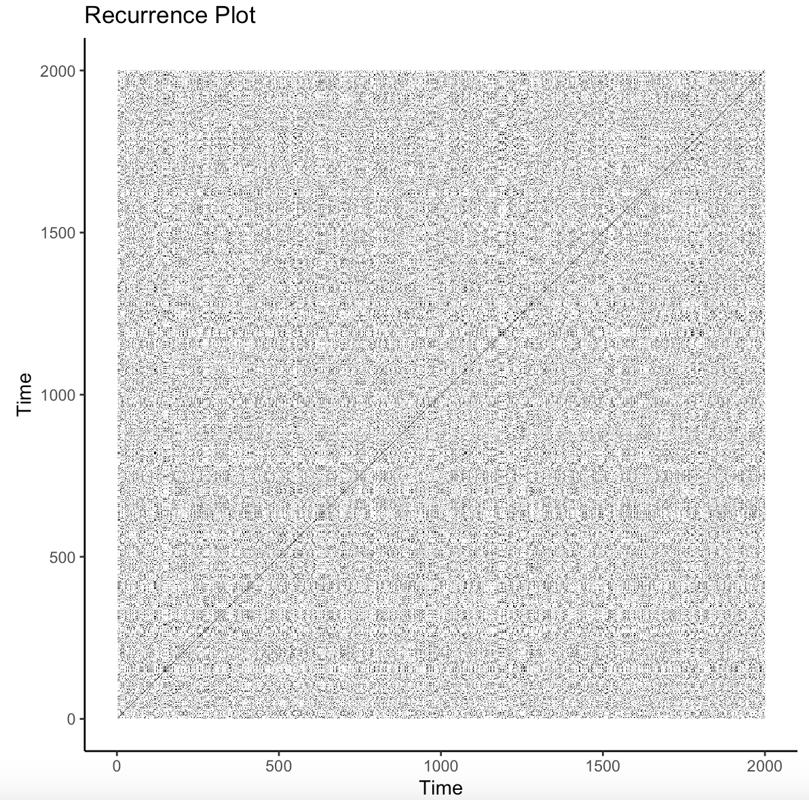

# Load and activate crqa package
# install.packages('crqa')
library('crqa')14 Detecting Nonlinear Patterns in Education Research: A tutorial on Recurrence Quantification Analysis
Abstract
Recurrence Quantification Analysis (RQA) is a robust analytical technique that can be used to identify and quantify patterns within nonlinear dynamical systems. This analysis can identify shifts in human behavior regarding learning processes, the evolution of how a system demonstrates functionality versus dysfunctionality, and how this shifts across different time dimensions. Ultimately, RQA can reveal patterns in learning processes that could not be captured, measured, or tracked using traditional methods. As such, this chapter reviews the different methodologies for applying RQA to education research, leveraging this analytical methodology for capturing the dynamics of learning processes as it occurs within educational contexts. This chapter will review three RQA methods, including auto-RQA, cross-RQA, and multidimensional-RQA, how it has been applied within education research, and provide a tutorial of how these analyses can be conducted and interpreted for your own research purposes.
14.1 Introduction
Recurrence Quantification Analysis (RQA) is an analytical technique to identify and quantify the repetition, i.e., recurrence, of patterns in nonlinear dynamical systems [1, 2]. RQA is used to quantify how and when system behaviors shift between repetitive (e.g., A, A, A) and novel (e.g., B, C, D) sequences, revisiting prior states (e.g., A, B, C, A) or evolving intov new behaviors over a temporal period and observed across all possible time lags. RQA can be conducted using both categorical and continuous data, for one or multiple time series, and across several contexts, domains, and research agendas. Specific to learning and educational phenomena, RQA is an infrequent analytical method but has been used to examine collaborative learning [3], self-regulated learning [4], and other learning processes using a variety of data including eye tracking, log files, physiology, and verbalization data. Through this analysis, researchers are able to understand fluctuations in learning dynamics, quantify learning as either functional or dysfunctional, and examine how students can work together in a collaborative setting for increased learning outcomes. Within this chapter, we will review the different RQA approaches, how RQA has been used within educational contexts, and conclude with the future directions of incorporating RQA into future educational technologies for providing personalized learning experiences.
14.2 Methods
There are three approaches for conducting RQA depending on research questions, auto-RQA (aRQA), which compares a single time series against itself to determine repeated signals within a single time series, cross-RQA (cRQA) which compares two different time series to determine synchronicity of states, and multidimensional-RQA (mdRQA) which compares more than two time series. All three approaches use a recurrence plot (see Figure 14.1), also known as a recurrence plot, as the primary tool for identifying sequences and patterns of behavioral repetition in the time series under examination.

This plot maps Time Series 1 on the x-axis and Time Series 2 on the y-axis (note that in aRQA, Time Series 1 and Time Series 2 are the same time series). If an event in Time Series 1 matches that of an event in Time Series 2, the intersection of these events on the recurrence plot is shaded black and labeled a recurrent point. Should the events not match, the intersection remains white. Recurrent points are identified as a “close” distance between time series events, where the value of “close” is termed the radius and is determined by the researcher conducting the analyses. The recurrence plot itself can serve as a valuable visualization of the dynamics of system behaviors, identifying instances of stability (repeated patterns) and instability (lack of repetitious behaviors) over a temporal period. Several metrics can be extracted from the recurrence plot which reveal different features of the dynamics of a system. For detailed descriptions, please refer to [1].
It is also important to note that there are some restrictions to the data that can be used. First, a rule of thumb within this analytical approach is that a time series needs to have a minimum of 10 events, either categorical or continuous. Additionally, the time series need to match in length. Within auto-RQA, this automatically occurs as both Time Series 1 and Time Series 2 are the same. However, in the cases of cross-RQA and multidimensional-RQA, Time Series 1 and Time Series 2 are not the same. Therefore, the raw time series data need to be of the same length, or some data manipulation needs to occur for the analyses to be conducted.
Another note to account for is that the tutorials that are written below for auto-RQA and cross-RQA, crqa package version 2.0.6 was utilized [5]. As such, depending on the version of your package, you may need to either account for variations in package versions or use an earlier package version.
Within the next subsections, we will provide a brief description of each RQA approach, research questions that can guide these specific analyses in relation to learning processes, and a brief tutorial of how to conduct these analyses within R and RStudio. This chapter will also review only categorical RQA examples. While we acknowledge that continuous RQA is an incredibly important approach, for the brevity of the chapter and the ease in which the reader can learn RQA, we present only three of the six RQA approaches.
14.2.1 aRQA
Auto-recurrence quantification analysis (aRQA) focuses on identifying and quantifying the dynamics within a single time series to identify the different sequences and patterns of repetition that appear across time. This can be used to identify repetitious behaviors, the deterministic structures of a time series, the (in)stability of a time series, and other such metrics. In relation to learning processes, aRQA can provide incredible insight into the dynamics of a learner, identifying how learner characteristics and performance can change dynamically over time. For example, aRQA can reveal how emotions emerge over time during a learning task [6], reveal the degree to which learners` self-regulated learning strategy use demonstrates repetitious patterns [4, 7], or examine how learner profiles can change over the course of a semester [8].
Because of the versatility of aRQA in applying to both continuous and categorical time series data, there are several avenues research can take by employing an aRQA analytical approach. Researchers can identify how certain interruptions or interventions within the learning context can result in a nonlinear shift in human behavior [9]. Emotions captured via facial expressions can identify how often certain patterns of emotions emerge over time and identify when and how often emotional states re-occur. Researchers can also ask the question of how predictable learning strategies are in terms of how often certain strategies are repeated or identify the extent to which repetitious learning strategies positively or negatively contribute to learning outcomes. It is important to note that the research question must also reflect themes of complexity, dynamism, and non-linearity to appropriately guide the aRQA analyses to protect against the unethical use of these analytical approaches.
14.2.1.1 aRQA Tutorial
For this tutorial, we will use aRQA to calculate extract metrics of complexity between two participants and compare each of their metrics to provide an example of how this can be applied to your own datasets. To begin this tutorial, we will take aRQA with categorical data as our example analysis and utilize the R package crqa [5], version 2.0.6.
Within this package, there are several data available for use to practice coding. To call the data, we will use the line:
data(crqa) # calling dataFor this example, we will use the eyemovement dataset. However, this dataset was originally intended to provide a cRQA example with categorical data. For our example, we will use the listener column as Participant 1 and narrator as Participant 2. In other words, the column represents two participants and the number represents a categorical factor. Within your own datasets, this may be the action in which a participant is taking on a task or a sequence of learning strategies that are deployed during learning. For each participant, we will run aRQA as you would in a study with multiple participants. Prior to doing so, though, we must first change the data type as currently it is an integer. We will transform the data into a factor to conduct categorical aRQA.
View(eyemovement) #View the dataset#Deleting the second column
eyemovement_onlylistener <- eyemovement[-c(2)]
#Deleting the first column
eyemovement_onlynarrator <- eyemovement[-c(1)]
#changed to factor
eyemovement_onlylistener$listener<-as.factor(eyemovement_onlylistener$listener)
#changed to factor
eyemovement_onlynarrator$narrator<-as.factor(eyemovement_onlynarrator$narrator) Now, we are left with two datasets containing 2,000 entries. We can imagine each dataset to be our categorical time series for a single participant where each number is representative of a different category, such as a self-regulated learning strategy, or some other coded behavior of a complex system. Note that, in your own dataset, these can remain characters or strings where no numbers need to be used, or coding must occur, should you already have the semantic meaning present. In addition, subsetting each participant is not necessary for this analysis in which each column may be called separately when running the crqa function below. Indeed, this would be tedious if we were reviewing more than two participants. However, within this tutorial it is easier to identify which participant we are evaluating given the different naming conventions of the datasets.
Next, we will set our parameters for the crqa function. Parameters within this function help to identify the type of data that is being used, the structure of the data, the way in which the time series data should be considered recurrent, and calls for any transformation of the data or phase space in which the data exists. As such, this is an important step that cannot be skipped and needs the researcher to be mindful of how these parameters effect how metrics are calculated and the interpretation of output. For more information on parameters and the different options to input into the parameters, you may refer to Coco et al. [10] for the package documentation.
Parameters could be defined in the function itself; however, I find it a bit less messy when the parameters are set before conducting RQA. Delay refers to the unit by which the series are lagged and embed refers to the number of dimensions for our lag intervals, or phase-reconstruction. We set these parameters to 1 so that we are able to identify sequential patterns. Rescale is the rescaling of the distance matrix. For this argument, we set the rescale to 0, which does nothing to the distance matrix. The radius parameter is critical to the distance in which two data are considered recurrent or not. For categorical data, we set the radius to 0 to have an exact match. For continuous data, this would be a number established by the statistician and accounting for the scaling of the data. Normalize allows us to normalize the time series where a setting of 0 does not transform the data. The minimum diagonal and vertical lines are typically set to 2 and defines the minimum number of recurrent points for a line to be defined. Further parameters are typically set to default but can be changed depending on the research question and any parametrizations that the statistician would like set for interpretation. However, importantly within the code shown below is the datatype argument in which we define our data as categorical. It is important to note that the parameters should be the same for each participant you run aRQA on for comparison purposes.
#aRQA Parameters
delay = 1; embed = 1; rescale = 0; radius = 0;
normalize = 0; mindiagline = 2; minvertline = 2;
tw = 0; whiteline = FALSE; recpt = FALSE; side = "both"
method = 'crqa'; metric = 'euclidean';
datatype = "categorical"Note that for these parameters, we have a radius of 0 and our datatype is categorical. This states that we will only accept matching pairs as recurrent points and that our data is categorical, not continuous.
Now, a couple of ground rules for aRQA: (1) do not include missing data, omit NAs using any method you see fit; (2) this can only be used for a single time series at a time; if you would like to do a full dataset, you will need to wrap this code in a looping function or equivalent methodology; and (3) there must be a minimum of 10 data points within a single time series. So! Now we will set our data within our function. As you have already defined the parameters above, you will only need to input your time series 1 and time series 2. Remember, as we are doing auto-RQA, time series 1 and 2 will be identical within the call function.
# Renaming our dataset for ease of use
ts1 <- eyemovement_onlylistener
# Running aRQA on time series
Listener_aRQA <- crqa(ts1, ts1,
delay, embed, rescale, radius, normalize,
mindiagline, minvertline, tw, whiteline,
recpt, side, method, metric, datatype) When running this function above, you may experience a warning: “Your input data was provided either as character or factor, and recoded as numerical identifiers.” This is not anything to worry about, just the program informing you that your data type was changed to match what was needed for the function to run. We renamed our dataset for our own ease of use. You do not have to do this step and you can just keep your original name, especially if you are conducting these analyses on several datasets (i.e., each participant) in which identifiers need to be used for organization purposes. When running the crqa function, a .rds file will be output. I like to save the .rds file onto my computer so that I always have a copy.
saveRDS(Listener_aRQA, file = "Listener_aRQA.rds") #Save DataFinally, we call the .rds file into a dataframe to show us the results of our data.
View(Listener_aRQA) #View dataframegt::gt_preview(Listener_aRQA) #View dataframeWe will repeat the same process with the narrator dataset.
ts2 <- eyemovement_onlynarrator
narrator_aRQA <- crqa(ts2, ts2,
delay, embed, rescale, radius, normalize,
mindiagline, minvertline, tw, whiteline,
recpt, side, method, metric, datatype)
saveRDS(narrator_aRQA, file = "narrator_aRQA.rds")Calling our new dataframe in the console, we receive the output:
narrator_aRQA$RR
[1] 19.9845
$DET
[1] 98.57515
$NRLINE
[1] 54541
$maxL
[1] 2000
$L
[1] 14.44766
$ENTR
[1] 3.349063
$rENTR
[1] 0.632698
$LAM
[1] 99.38878
$TT
[1] 26.13209
$catH
[1] 4.514792You are able to identify several metrics that are defined in the crqa documentation by Coco et al. [10]. We identify the different output metrics and their definitions below in Table 14.1.
| Metric | Definition |
|---|---|
| Recurrence Rate (RR) | The percentage, or proportion, of recurrent points within the recurrence plot. |
| Percent Determinism (DET) | The percentage, or proportion, of recurrent points on diagonal line structures within the recurrence plot. |
| NRLINE | Number of lines within the recurrence plot. |
| maxL | The number of recurrent points on the longest diagonal line segment within the recurrence plot. |
| L | The average length of all line structures. |
| Entropy (ENTR) | The Shannon entropy of the diagonal line structures as defined by the minimum length of line structures allowable within the set parameters. |
| rENTR | Normalized entropy measure. |
| Laminarity (LAM) | Proportion of recurrent points on vertical line structures within the recurrence plot. |
| Trapping Time (TT) | The average length of vertical line structures within the recurrence plot. |
| catH | Entropy of plots based on the rectangular block structures, only applied to categorial recurrence plots. |
The next step is to identify the meaning of those metrics in terms of data interpretation. Alone, they do not mean much. For example, what does it mean that there is a recurrence rate of 15.1 in the grand scheme of your data? So what if the entropy is 2.18? When applying aRQA to participant data, let’s say in an experimental study, it becomes easier to determine what these metrics are saying. For example, Dever et al. [4] examined the differences in recurrence rates between participants of different conditions and then related this further to learning outcomes. This provided an understanding of the relationship between learning outcomes and complexity metrics for a specific psychological phenomena.
We are also able to visualize each plot with the following code:
plot1 <- Listener_aRQA$RP
plot2 <- narrator_aRQA$RP
plot_rp(plot1)
plot_rp(plot2)
Please note that the function, plotRP, may not exist in your current version of cRQA but may instead be named plot_rp. Please consult your version documentation for the correct naming.
For our datasets, we can compare two participants. For example, Participant 1 (RR = 15.13) showed that they had a lower recurrence rate than Participant 2 (RR = 19.98), demonstrating that Participant 1’s repetition of behaviors was lower than Participant 2. These metrics are extracted from the output as detailed above in our code labeled “Output”. This is echoed throughout the other metrics, such as percent determinism in that Participant 2 had a greater value at 98.6% than Participant 1 at 95.9%, showing that Participant 2 demonstrated more predictable behavior. As previously mentioned, please refer to in-depth documentation by Coco et al. [10] for the calculation, meaning, and interpretations of these complexity metrics.
While significance tests cannot be run due to the low number of participants in this tutorial, expanding this out to a greater number of participants will provide the researcher with the opportunity to identify if there are significant differences in the complexity metrics between groups, if the metrics are predictive of learning outcomes, or identify if the overall behavior as visualized on the recurrence plot is indicative of functional behaviors. For example, for a larger sample size, t-tests can identify if participants belonging to one group had significantly greater or lower metrics than participants belonging to another group [e.g., 4]. Qualitatively using Figure 14.2, we can identify significant concentrations of black squares on the right recurrence plot depicting the narrator time series, Participant 2. This observation has two meanings: (1) this corresponds to the metrics pulled from the dataset which shows that Participant 2 has a greater repetition of behaviors; and (2) the concentration of repetitive behaviors at the beginning of the time series decreases as time progresses, demonstrating that Participant 2 transitioned from (most likely) dysfunctional behaviors to more functional behaviors.
In sum, this tutorial is meant to demonstrate how to quantify complexity within your dataset. However, this is not the only way to do so where several packages and other methods exist for aRQA, and other RQA approaches, to be conducted. As such, it is important for you to identify the best approach for your data to respectfully conduct analytical techniques for the furtherance of research.
14.2.2 cRQA
Cross-recurrence quantification analysis, cRQA, identifies and quantifies the recurrent dynamics between two different time series, such as that seen in dyads during a collaborative problem-solving task [e.g., 11]. CRQA examines the cross-recurrences of two different sequencies which is useful for examining the degree of similarity between two sequences that may be temporally dissimilar at first glance [12]. Within educational research, cRQA is more often employed when examining the dynamics between pairs of learners. For example, Duong et al. [13] released a recent tutorial on how to examine the dynamics of the reciprocal exchanges between two individuals which can be applied to conversations between teams of learners. Moulder et al. [11] compared eye gaze data between pairs of learners on a team using cRQA to reveal how the similarities between two time series are indicative of task success and effective team collaboration. Nguyen et al. [14] also used cRQA to quantify emotional synchrony among learners within a collaborative group that was a result of regulatory triggers. This study found that examining how learners` emotional synchrony changes as a result of regulatory behaviors is an important consideration for evaluating team collaboration. In sum, cRQA identifies similarities in two time series, allowing researchers to examine patterns of alignment, communicative behavior, shared cognition, etc. that results in greater learning outcomes.
14.2.3 cRQA Tutorial
The goal of this tutorial is to use cRQA to detect the level of complexity and synchrony between two research subjects. This tutorial will conduct categorical cRQA using the datasets found in the crqa package. This is the same package that was utilized for the aRQA tutorial above. We will start by calling the eyemovement dataset from the crqa package.
data(crqa)View(eyemovement) #View the datasetIn this dataset, there are two columns – listener and narrator – each representing their own categorical time series. As with the aRQA tutorial, the columns represent two different participants and the rows represent the participants` time series as it occurs sequentially. As before, we should now set our parameters to examine the similarities in the two time series. As these time series are categorical, we will use the same parameters as we did with aRQA.
#cRQA parameters
delay = 1; embed = 1; rescale = 0; radius = 0;
normalize = 0; mindiagline = 2; minvertline = 2;
tw = 0; whiteline = FALSE; recpt = FALSE; side = "both"
method = 'crqa'; metric = 'euclidean';
datatype = "categorical"We then can conduct cRQA with narrator as time series 1 and listener as time series 2.
Tutorial_cRQA <- crqa(eyemovement$narrator, eyemovement$listener,
delay, embed, rescale, radius, normalize,
mindiagline, minvertline, tw, whiteline,
recpt, side, method, metric, datatype)The metrics are then available to extract. Instead of extracting all metrics as we did in the tutorial above, let us say that our research question only necessitates examining the percent recurrence and percent determinism. We can extract only those metrics of this cRQA calculation by using the following code:
crqaMetrics <- c(Tutorial_cRQA[1], Tutorial_cRQA[2])
crqaMetrics$RR
[1] 12.5229
$DET
[1] 98.95931This shows us that our recurrence rate is 12.5% while our percent determinism is 99.0%. This shows that the system exhibits relatively few repeated states, but when those repetitions occur, they tend to follow a predictable pattern, suggesting a high degree of order within the system despite its overall non-repetitive nature.
We may also visualize the resulting recurrence plot (Figure 14.3) using:
cplot <- Tutorial_cRQA$RP
plot_rp(cplot)
You may notice how this recurrence plot is not symmetrical like that seen in aRQA, Figure 14.2. This is because the x- and y-axes are two different time series and therefore will not demonstrate symmetrical patterns in their plot. You can also see that the bclack dots are sparse, confirming the low recurrence rate extracted from the time series. However, from this plot we can see that while the repetitive states do not occur often at the beginning of the time series, the repetition increases towards the end of the time series. Should these time series have reflected a dyad engaging in collaborative problem-solving, we could interpret this as synchronization as the time on task progressed
This tutorial demonstrated how two time series can be compared for similarities. In future studies, researchers may be able to determine if there are imbalances of similarities between a team of three learners, examine the extent to which the behavioral markers of a novice deviate from that of an expert, or identify instances of synchronicity between emotional and physiological data. However, there may be instances in which dyads, or indeed only two time series, are not sufficient. Rather, it is important to examine three or more time series. Because of this, multidimensional-RQA was developed as a third approach for examining dynamics across multiple time series.
14.2.4 MdRQA
Multidimensional-RQA, or MdRQA, is the third approach of RQA analyses that allows for studying the dynamics across at least three time series. If the time series represented in MdRQA is, say, the gaze behaviors of three individual learners, then MdRQA is conducted on all participants’ time series simultaneously. For example, if the first event of the time series has Participant A gazing at a non-player character, Participant B gazing at a book, and Participant C gazing at a food item within a game-based learning environment, the next event in which the participants display the same gaze behaviors will be marked as recurrent with the first event. This can also be applied to log files of behaviors, physiological arousal, emotions, and the cognitive processes that occur during learning.
Several studies have leveraged MdRQA to examine team behavior and synchrony. Dindar et al. [3] used MdRQA to detect physiological synchrony of teams of students as they engaged in a learning task to determine the extent to which the synchrony displayed within each team of student relates to students’ shared regulatory behavior. Another study by Braun et al. [15] also examined physiological synchrony between five-person teams to determine differences in workload between highly and lowly synchronized teams and determined that physiological synchrony is a valid measure of team mental workload. Similarly, Sharika et al. [16] also used MdRQA to determine the level of physiological synchrony between groups and how this related to group-level decision making. Outside of team collaboration, MdRQA has also been used to measure learners` emotions [6], socially-shared regulation via eye gaze data extracted during a group task [17], facial expressions as teams quit during game-based learning [18], and as indicators of stress and learning during collaborative tasks [19].
From the extensive literature incorporating MdRQA, this analytical technique offers a robust and unique approach for identifying recurrence in behaviors, affect, physiology, and cognition during collaborative tasks as well as across multiple types of data streams. As such, MdRQA affords researchers to opportunity to study the dynamics across teams of people and multimodal data to identify instances of high and low recurrence. These patterns of recurrence can then be attributed to several factors such as learning outcomes, mental workload, cognitive and metacognitive abilities, etc. In the next section, we present how MdRQA can be conducted within R.
14.2.4.1 MdRQA Tutorial
The goal of this tutorial is to use MdRQA to examine the level of similarity three participants on a team have with each other, ultimately understanding the extent to which their self-regulated learning strategies synchronized while completing a collaborative task. To run MdRQA, we first need to copy and paste the code for the function within our script. This is because the function has not yet been integrated into the crqa package. This code can be found in the Supplementary Materials of Wallot & Leonardi [12] or in the following GitHub repository: https://github.com/Wallot/MdRQA.
source("mdrqa.R")In addition, you will need to install a new package called SDMTools. However, as this may no longer be available on CRAN, you may use either a Github mirror or remote install the correct version of R using the remotes library.
# Install and Call new needed library
# install.packages("SDMTools") # Install SDMTools package
# devtools::install_github("jjvanderwal/SDMTools") # Github version
library("SDMTools") #call libraryThe data that will be used should be a matrix in which each column represents each time series to be used. Each row should correspond to the sequence of events within the time series. For this tutorial, we will create a random dataset in which we have three participants – Participant A, Participant B, and Participant C – with 2000 datapoints each. Each row will contain a specific learning strategy a learner has used. The code we will use will randomly draw from the list of defined strategies to fill in the rows for each participant. In sum, we will create a dataset in which the three columns are each of the participants and the rows represent the sequential time series of each participant.
# Set the number of rows
num_rows <- 2000
# Define the strategies
strategies <- c("planning", "monitoring", "goalsetting", "contentevaluation", "notetaking", "rereading")
# Create the dataset
dataset <- data.frame(
ParticipantA = sample(strategies, num_rows, replace = TRUE),
ParticipantB = sample(strategies, num_rows, replace = TRUE),
ParticipantC = sample(strategies, num_rows, replace = TRUE)
)Our datasets will be different, but the dataset should look something like this:
datasetNow that we have our data, we will use the mdrqa function we input earlier to run MdRQA on our three participants.
mdrqa_res <- mdrqa(data = as.matrix(dataset), emb = 1, del = 1, norm = "euc", rad = 0)
mdrqa_res$RR
[1] 10.0483
$DET
[1] 19.47543
$NRLINE
[1] 36115
$maxL
[1] 2000
$L
[1] 2.167465
$ENTR
[1] 0.3638623
$rENTR
[1] 0.2030754
$LAM
[1] 19.58814
$TT
[1] 2.132071
$catH
[1] 0.6078642 image(mdrqa_res) # show recurrence plot
We can visualize our data (Figure 14.4) by calling the function image. This is a slightly different protocol than the aRQA and cRQA examples from above as we are using the function mdrqa developed by Wallot & Leonardi [12]. We are provided with a plot which denotes when the values from each time series at a given time matches itself to denote when the time series’ return to the same states.
From the metrics extracted from this previous example, we can interpret the similarities between the three participants in their strategy use. If we were to imagine that the three participants were working as a team on an assignment, we could determine if high or low levels of similarity between the participants is indicative of greater learning outcomes at either the individual or team levels. The visualization as well as the statistics output from MdRQA denote that there is no decipherable pattern and, generally, the group-level synchrony is not predictable and does not repeat often. I would interpret this plot as indicating that there was a balance in group-level behaviors where the self-regulated learning strategies that the group were enacting matched each other and other times that the strategies were not the same across all group members. Further research questions could examine the specific patterns that learners display, the extent to which the similarities in time series data evolve over time, and the predictive power of the metrics of complexity in determining learning outcomes.
15 Concluding Remarks
Recurrence Quantification Analysis (RQA) offers a robust and versatile framework for examining the dynamic behaviors inherent in learning processes, spanning from collaborative learning to regulation of cognition and affect. By enabling researchers to identify patterns of stability and change within individual learners (aRQA), dyadic interactions (cRQA), and group dynamics across a multitude of time series (MdRQA), this approach provides valuable insights into the dynamics of learning. Across a range of educational contexts—from self-regulated learning and emotional dynamics to collaborative problem-solving and team-based synchrony—RQA has demonstrated its potential to uncover nuanced relationships between learning behaviors and outcomes. As educational research increasingly focuses on understanding complexity, applying RQA to new modalities of data, such as multimodal learning analytics and real-time adaptive technologies, represents an exciting frontier. Future advancements in RQA approaches and integration with emerging technologies may pave the way for more personalized, responsive, and effective educational interventions, ultimately enhancing the learner experience and advancing the field of educational research.
16 Future Readings to Consider
As you apply RQA to your own datasets, merging your program of study with complexity science, it is important to be able to look to some works that accurately teach and demonstrate how you can use these analytical tools within your research. There are several tutorials with applications to datasets that can be of use, including Wallot & Grabowski [20] which uses RQA for keystroke data, Wallot [9] in how to apply RQA to psychological research, Wallot & Leonardi [12] to examine cRQA and MdRQA, and Wallot for a review of MdRQA and the specific metrics output from these analyses. There are several other works by Wallot that I would suggest that are great for those just foraying into complexity, and specifically RQA. With applying RQA to psychological phenomena in educational research, there are several works to note that [21] apply and (most importantly) explain RQA and how complexity links to their research. Dever et al. [22] and [7] both explore the use of aRQA as applied to how students engage in self-regulatory behaviors while learning with an intelligent tutoring system and game-based learning environment respectively. Another work by Dindar et al. [18] utilized aRQA to examine the facial expressions of students as they worked in collaborative teams with a game-based learning environment. Other papers such as Nguyen et al. [14] have used cRQA to identify collaborative learning through emotional synchrony of teams. MdRQA and cRQA have also been used with eye gaze behaviors to identify dynamics in teams [11]. This paper is notable due to the author`s use of both cRQA and MdRQA within the same paper to look at different dimensions of collaborative learning, leveraging both RQA approaches to fully understand learning behaviors. These papers mentioned above provide a great framework for why RQA approaches were used and how educational research can integrate complex science methodological techniques.
References
1.
Wallot S, Grabowski J (2019) A tutorial introduction to recurrence quantification analysis (RQA) for keystroke logging data. In: Observing writing. BRILL, pp 163–189
2.
Wallot S (2017) Recurrence quantification analysis of processes and products of discourse: A tutorial in R. Discourse Process 54:382–405. https://doi.org/10.1080/0163853x.2017.1297921
3.
Wallot S, Leonardi G (2018) Analyzing multivariate dynamics using cross-recurrence quantification analysis (CRQA), diagonal-cross-recurrence profiles (DCRP), and multidimensional recurrence quantification analysis (MdRQA) - a tutorial in R. Front Psychol 9:2232. https://doi.org/10.3389/fpsyg.2018.02232
4.
Wallot S (2019) Multidimensional cross-recurrence quantification analysis (MdCRQA) - a method for quantifying correlation between multivariate time-series. Multivariate Behav Res 54:173–191. https://doi.org/10.1080/00273171.2018.1512846
5.
Dever DA, Amon MJ, Vrzáková H, Wiedbusch MD, Cloude EB, Azevedo R (2022) Capturing sequences of learners’ self-regulatory interactions with instructional material during game-based learning using auto-recurrence quantification analysis. Front Psychol 13:813677. https://doi.org/10.3389/fpsyg.2022.813677
6.
Dever DA, Sonnenfeld NA, Wiedbusch MD, Schmorrow SG, Amon MJ, Azevedo R (2023) A complex systems approach to analyzing pedagogical agents’ scaffolding of self-regulated learning within an intelligent tutoring system. Metacognition and Learning 18:659–691. https://doi.org/10.1007/s11409-023-09346-x
7.
Dindar M, Cloude EB, Kiili K (2024) An experimental study of facial expressions in collaborative teams that quit a game-based learning task: Within-team competition vs. No within-team competition. In: Lecture notes in computer science. Springer Nature Switzerland, Cham, pp 105–119
8.
Nguyen A, Li Y, Järvelä S, Liu Y, Zhao G (2023) Emotional synchrony through regulatory triggers in collaborative learning: A facial expression recognition study. In: Proceedings of the 17th international conference of the learning sciences - ICLS 2023. International Society of the Learning Sciences
9.
Moulder R, Booth B, Abitino A, D’Mello S (2023) Recurrence quantification analysis of eye gaze dynamics during team collaboration. In: LAK23: 13th international learning analytics and knowledge conference. ACM, New York, NY, USA
References
1.
Webber C, Zbilut J (2004) Recurrence quantification analysis of nonlinear dynamical systems. In: M. A. Riley GVO (ed) Tutorials in contemporary nonlinear methods for the behavioral. pp 26–94
2.
Webber CL Jr, Marwan N, Facchini A, Giuliani A (2009) Simpler methods do it better: Success of recurrence quantification analysis as a general purpose data analysis tool. Phys Lett A 373:3753–3756. https://doi.org/10.1016/j.physleta.2009.08.052
3.
Dindar M, Alikhani I, Malmberg J, Järvelä S, Seppänen T (2019) Examining shared monitoring in collaborative learning: A case of a recurrence quantification analysis approach. Comput Human Behav 100:335–344. https://doi.org/10.1016/j.chb.2019.03.004
4.
Dever DA, Sonnenfeld NA, Wiedbusch MD, Azevedo R (2022) Pedagogical agent support and its relationship to learners’ self-regulated learning strategy use with an intelligent tutoring system. In: Lecture notes in computer science. Springer International Publishing, Cham, pp 332–343
5.
Coco MI, Monster D, Leonardi G, Dale R, Wallot S (2021) Unidimensional and multidimensional methods for recurrence quantification analysis with crqa. R Journal 13: https://doi.org/10.32614/RJ-2021-062
6.
Cloude EB, Munshi A, Andres JMA, Ocumpaugh J, Baker RS, Biswas G (2024) Exploring confusion and frustration as non-linear dynamical systems. In: Proceedings of the 14th learning analytics and knowledge conference. ACM, New York, NY, USA
7.
Dever DA, Sonnenfeld NA, Wiedbusch MD, Schmorrow SG, Amon MJ, Azevedo R (2023) A complex systems approach to analyzing pedagogical agents’ scaffolding of self-regulated learning within an intelligent tutoring system. Metacognition and Learning 18:659–691. https://doi.org/10.1007/s11409-023-09346-x
8.
Poquet O, Jovanovic J, Pardo A (2023) Student profiles of change in a university course: A complex dynamical systems perspective. In: LAK23: 13th international learning analytics and knowledge conference. Association for Computing Machinery, New York, NY, USA, pp 197–207
9.
Wallot S (2017) Recurrence quantification analysis of processes and products of discourse: A tutorial in R. Discourse Process 54:382–405. https://doi.org/10.1080/0163853x.2017.1297921
10.
Coco MI, Mønster D, Leonardi G, Dale R, Wallot S (2021) Unidimensional and multidimensional methods for recurrence quantification analysis with crqa. The R Journal 13:145–163
11.
Moulder R, Booth B, Abitino A, D’Mello S (2023) Recurrence quantification analysis of eye gaze dynamics during team collaboration. In: LAK23: 13th international learning analytics and knowledge conference. ACM, New York, NY, USA
12.
Wallot S, Leonardi G (2018) Analyzing multivariate dynamics using cross-recurrence quantification analysis (CRQA), diagonal-cross-recurrence profiles (DCRP), and multidimensional recurrence quantification analysis (MdRQA) - a tutorial in R. Front Psychol 9:2232. https://doi.org/10.3389/fpsyg.2018.02232
13.
Duong TJAB Shirley AND Davis (2024) Exploring dynamic structures of dyadic conversations using categorical cross recurrence quantification analysis: A tutorial. The Quantitative Methods for Psychology 20:121–136. https://doi.org/10.20982/tqmp.20.2.p121
14.
Nguyen A, Li Y, Järvelä S, Liu Y, Zhao G (2023) Emotional synchrony through regulatory triggers in collaborative learning: A facial expression recognition study. In: Proceedings of the 17th international conference of the learning sciences - ICLS 2023. International Society of the Learning Sciences
15.
Braun J, Hogh N, Kubowitsch S (2024) Evaluating team workload through physiological synchrony: An exploratory study using MdRQA data to assess teams in action. In: Proceedings of the international conference on industrial engineering and operations management. IEOM Society International, USA, USA, pp 771–783
16.
Sharika KM, Thaikkandi S, Nivedita, Platt ML (2024) Interpersonal heart rate synchrony predicts effective information processing in a naturalistic group decision-making task. Proc Natl Acad Sci U S A 121:e2313801121. https://doi.org/10.1073/pnas.2313801121
17.
Whitehead R, Nguyen A, Järvelä S (2024) Exploring the role of gaze behaviour in socially shared regulation of collaborative learning in a group task. J Comput Assist Learn 40:2226–2247. https://doi.org/10.1111/jcal.13022
18.
Dindar M, Cloude EB, Kiili K (2024) An experimental study of facial expressions in collaborative teams that quit a game-based learning task: Within-team competition vs. No within-team competition. In: Lecture notes in computer science. Springer Nature Switzerland, Cham, pp 105–119
19.
Yan L, Martinez-Maldonado R, Zhao L, Li X, Gašević D (2023) Physiological synchrony and arousal as indicators of stress and learning performance in embodied collaborative learning. In: Lecture notes in computer science. Springer Nature Switzerland, Cham, pp 602–614
20.
Wallot S, Grabowski J (2019) A tutorial introduction to recurrence quantification analysis (RQA) for keystroke logging data. In: Observing writing. BRILL, pp 163–189
21.
Wallot S (2019) Multidimensional cross-recurrence quantification analysis (MdCRQA) - a method for quantifying correlation between multivariate time-series. Multivariate Behav Res 54:173–191. https://doi.org/10.1080/00273171.2018.1512846
22.
Dever DA, Amon MJ, Vrzáková H, Wiedbusch MD, Cloude EB, Azevedo R (2022) Capturing sequences of learners’ self-regulatory interactions with instructional material during game-based learning using auto-recurrence quantification analysis. Front Psychol 13:813677. https://doi.org/10.3389/fpsyg.2022.813677